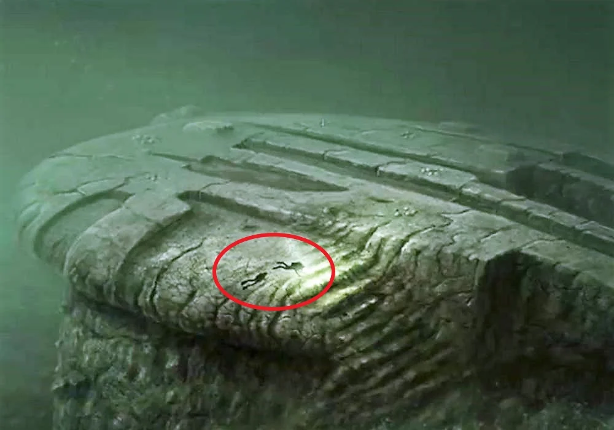

In 2011, a team of Swedish divers discovered an unusual object at the bottom of the Baltic Sea, located around 92 meters deep. The object, which has a shape resembling a "flying saucer" or "stonehenge-like structure," has puzzled researchers and sparked theories of it being a sunken UFO or an ancient man-made structure.
The object was discovered by the Ocean X team while they were searching for shipwrecks. Its unusual shape, along with the surrounding formations, led many to believe that it could be something far more extraordinary than a simple geological formation.
Since its discovery, the Baltic Sea Anomaly has been the subject of speculation and intrigue. Some believe it could be the remains of a spacecraft, while others think it might be an ancient structure built by an unknown civilization. Despite extensive investigations, the true nature of the anomaly remains a mystery.
← Back to Explore